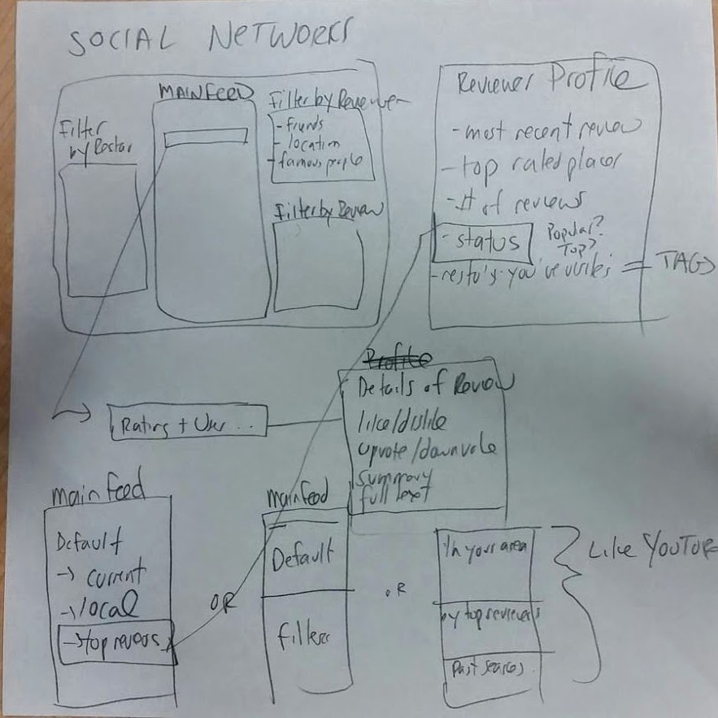

Redesigning Yelp
How would our restaurant searching experience change if we had a feed of reviews Instagram and Facebook style?
My team and I redesigned the Yelp experience to have a social media perspective. We added a feed that revolved around reviews of restaurants.The process we used:
Step 1: Task Examples and Requirements


Step 2: Low-fi Paper Prototype

Step 3: Cognitive Walkthroughs
Step 4: Evaluate to make Medium Fidelity Prototype

Step 5: Usability Studies

Step 6: Med-fi Usability Report


Step 5: Usability Studies
Step 6: Med-fi Usability Report
Step 6: Med-fi Usability Report